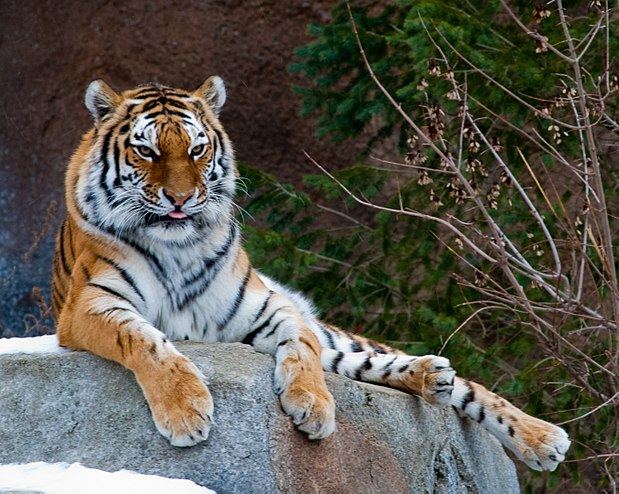

Tiger
Hổ
Hổ, còn gọi là cọp, hùm, kễnh, khái, ông ba mươi hay chúa sơn lâm (danh pháp hai phần: Panthera tigris) là 1 loài động vật có vú thuộc họ Mèo (Felidae), và là một trong bốn loại "mèo lớn" thuộc chi Panthera. Hổ là một loại thú dữ ăn thịt sống, chúng dễ nhận biết nhất với các sọc vằn dọc sẫm màu trên bộ lông màu đỏ cam với phần bụng dưới sáng hơn. Hổ là động vật to lớn nhất trong họ Mèo và là động vật lớn thứ 3 trong các loài thú ăn thịt (sau gấu trắng và gấu nâu). Hổ là một trong những loài động vật có biểu tượng lôi cuốn và dễ nhận biết nhất trên thế giới.
Các loài hổ
Có chín nòi (phân loài) hổ khác nhau, ba trong số đó đã tuyệt chủng và một có thể cũng sẽ tuyệt chủng trong tương lai gần. Cụ thể như sau: ● Panthera tigris altaica - hổ Siberi hay hổ Amur, hổ Mãn Châu. ● Panthera tigris amoyensis - hổ Hoa Nam. ● Panthera tigris balica - hổ Bali (tuyệt chủng). ● Panthera tigris corbetti - hổ Đông Dương (còn gọi là hổ Corbet). ●Panthera tigris jacksoni - hổ Mã Lai. ● Panthera tigris sondaica - hổ Java (tuyệt chủng). ● Panthera tigris sumatrae - hổ Sumatra. ● Panthera tigris tigris - hổ Bengal. ● Panthera tigris virgata - hổ Caspi hay hổ Ba Tư (tuyệt chủng).